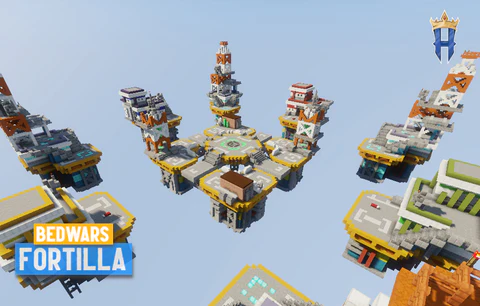

Minigame BedWars
Um pouco sobre Bedwars:
É um jogo que consiste em você coletar minérios e adiquirir
itens para defender sua cama e atacar as bases dos seus oponentes, as quais ficam no ar
junto com as ilhas principais, além de aprimorar suas ferramentas e armadura. A dinâmica do game
é bem simples, proteja sua cama, caso ela for destruída você não irá
renascer após ser derrotado. Para adquirir itens melhores, você deve ir as ilhas
onde contem geradores de minérios, como diamante que é utilizado para melhorias de
seus itens e base, e esmeraldas, com elas você consegue comprar itens como poções,
olho de enderman, maçã encantada etc.,vence aquele que derrotar seus inimigos
com suas camas destruídas. O jogo pode ser jogado em modo singleplayer ou multiplayer,
sendo o modo multiplayer o mais popular pelos players.

Voltar pra a - Home